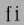

(nor does anyone)
These differ between OpenType (originally called TrueType Open) and Apple (GX or Apple Advanced Typography). My support for Apple is minimal as yet. My support for OpenType is not complete.
GPOS,
GSUB and GDEF opentype tables
GPOS, GSUB and
GDEF opentype tables
These two tables are used for positioning and substituting glyphs. The GPOS table can control things like: kerning, accent positioning, cursive joining, etc. The GSUB table can control things like: ligatures, arabic forms, vertical rotation, conversion to small caps, indic glyph rearrangement, etc.
This page assumes basic familiarity with the abilities of the tables, for more information on them read, study and inwardly digest the opentype docs on:
The basic idea of the GPOS and GSUB tables is that each script (or language within a script) has a set of "features" that are available to it. A feature in turn is associated with a lookup which contains data for the feature. An example of a script is 'latn' for latin, 'arab' for arabic, 'hani' for chinese ideographs. Two examples of features are 'kern' which provides kerning information between pairs of glyphs and 'init' which will transform one set of glyphs to another when those glyphs are at the beginning of a word.
PfaEdit does not support the full range of possibilities inherent in these tables.
GPOS table
PfaEdit will read the following sub tables of the GPOS table:
| name | Reading support | Writing support | |
|---|---|---|---|
| 1 | single adjustment | This sub-table allows the font designer to change the metrics of a specific character. The feature tag will provide a context in which the change should occur. For instance the 'tnum' (tabular numbers) feature could change a proportionally spaced digit by adjusting its advance width to be some set value and then centering the digit (by adjusting the left side bearing) within the new width. | These can be created with the Element->Char Info->Position command. |
| 2 | pair adjustment | This sub-table allows the font designer to change the metrics of a specific pair of character. The most common use of this is for kerning where the advance width of the first character is altered depending on which character follows it. But the table is more general than that and could support mark (accent, vowel) positioning over a base character (though that is more efficiently done with the mark to base subtable). | 'kern' feature s may be created from the Metrics View. 'vkrn' with Metrics->VKern From HKern. |
| 3 | cursive attachment | This sub-table allows the font designer to force adjacent characters to join at specific points. It can be used to generate the slanted script style needed for Urdu. | Only the 'curs' feature is supported for this sub-table. These may be created with the Points->Add Anchor command |
| 4 | mark to base | This sub-table allows the font designer to specify how mark characters (accents, vowel signs, etc.) are positioned over base characters. Every character can have an attachment point and the mark's attachment point will be placed on the base's attachment point so the two join properly. See my example in the overview. | These may be created with the Points->Add Anchor command |
| 5 | mark to ligature | This sub-table is very similar to the previous one except that the base character is a ligature and may have several different points at which the same type of accent may be placed. | These may be created with the Points->Add Anchor command |
| 6 | mark to mark | This sub-table is very similar to the previous two except that the base character is itself a mark. This may be used when a character has two accents each of which would normally be placed at the same attachment point on a base character. The second accent will be place relative to the first accent rather than to the base character. | These may be created with the Points->Add Anchor command |
| 7 | contextual positioning | This sub-table allows the font designer to control the positioning of characters when they occur within a specific string (or class of strings). For instance this table could say "when you see a digit followed by the string "th" then raise the "th" into a superscript position" | These may be created with the Element->Font Info->Contextual command |
| 8 | chaining contextual positioning | This is a slightly more complex version of the above, it doesn't really add new capabilities, but it does provide a more logical approach to the issue. | These may be created with the Element->Font Info->Contextual command |
| 9 | extension positioning | This is used to allow for a GPOS table which is bigger than 64k. Its use should be quite invisible to the font designer | PfaEdit uses this sub-table when needed. |
| 10+ | reserved for future use | PfaEdit does not support these sub-tables yet. (nor does anyone) |
PfaEdit also has built into it knowledge on how to provide default values for some features that use these tables. See Element->Default ATT command for that.
PfaEdit will retain the order of features in the GPOS table and when a font is generated the order should be the same as it was before.
GSUB table
PfaEdit will read the following sub tables of the GSUB table:
| name | Reading support | Writing support | |
|---|---|---|---|
| 1 | single substitution | This sub-table allows the font designer to change from one glyph to another, with a context provided by the feature tag. For example many scripts have letters which have a different form at the end of a word than they do within (this is true of every letter in arabic, several in hebrew, lower case sigma in greek, and the long-s/short-s pair in renaissance latin). So the 'fina' feature would map the normal form into the final form, and the word processing program would do a lookup at the end of each word to see if a transformation was needed. | These can be created with the Element->Char Info->Substitution command. |
| 2 | multiple substitution | This sub-table allows the font designer to replace one glyph by a series of others. This is generally used for rather technical layout issues. | These can be created with the Element->Char Info->Multiple Substitution command. |
| 3 | alternate substitution | This sub-table allows the font designer to have a series of "alternates" for each glyph. One common example would be an italic font which had several swash variants for each capital letter. The word processing program would allow the user to choose which variant was appropriate | These can be created with the Element->Char Info->Alternate Substitution command. |
| 4 | ligature substitution | This sub-table allows the font designer to replace a string of characters
with another glyph. A common example is a ligature where the string
 is replaced by
the |
These can be created with the Element->Char Info->Ligature command. |
| 5 | contextual substitution | This subtable allows for a string of glyphs to replace another string of glyphs (or class of strings of glyphs) | These may be created with the Element->Font Info->Contextual command |
| 6 | chaining contextual substitution | This is a slightly more complex version of the above, it doesn't really add new capabilities, but it does provide a more logical approach to the issue. | These may be created with the Element->Font Info->Contextual command |
| 7 | extension positioning | This is used to allow for a GSUB table which is bigger than 64k. Its use should be quite invisible to the font designer | PfaEdit uses this sub-table when needed. |
| 8 | reverse chaining contextual single substitution | This allows glyph substitutions to happen in reverse order, and it a varient of the chaining contextual subtable. | These may be created with the Element->Font Info->Contextual command |
| 9+ | reserved for future use | PfaEdit does not support these sub-tables yet. (nor does anyone) |
PfaEdit also has built into it knowledge on how to provide default values for some features that use these tables. See Element->Default ATT command for that.
PfaEdit can produce some of these tables, but the text layout/word processing program used has to look up the tables and do the actual work of rearranging the glyphs.
PfaEdit will retain the order of features in the GSUB table, and the user may adjust it with the Element->Font Info command.
GDEF table
PfaEdit will read ligature carets out of a GDEF table.
It will generate a GDEF table containing a glyph class definition sub-table (if needed) or a ligature caret sub-table (if needed).
As above I do not go deeply into the abilities of these tables, for more information see Apple's docs:
PfaEdit will current read and produce (if Apple mode is set in font generation) the following tables:
| tag | name | Reading support | Writing support |
|---|---|---|---|
'lcar' |
ligature caret table | PfaEdit will read ligature carets | PfaEdit will produce this table if the user has specified ligature carets |
'prop' |
glyph properties table | PfaEdit will read this table to figure out which glyphs are hebrew and arabic, and which have 'r2la' substitutions. | PfaEdit will generate this table if the font contains some right to left characters. |
| tag | name | Reading support | Writing support |
|---|---|---|---|
'kern' |
kerning table | PfaEdit will read horizontal/vertical kerning pairs and classes. | PfaEdit will produce this if the font contains kerning data |
'opbd' |
Optical bounds table | PfaEdit will read optical bounds | PfaEdit will produce this table if the user has specified right and left bounds as simple positions ('lfbd' and 'rtbd'). |
PfaEdit has minimal support now for the 'mort' and
'morx' tables (Glyph metamorphosis and extended
glyph metamorphosis tables). These correspond vaguely to the
GSUB table. Note: Currently only feature type/setting
combinations which correspond directly to an open type feature are saved
(use File->Preferences to extend PfaEdit's
mapping from feature type/setting to opentype tags).
| name | Reading support | Writing support | |
|---|---|---|---|
| 0 | Indic style rearrangement | Not supported | Not supported |
| 1 | contextual glyph substitution | Not supported | PfaEdit will generate a cursive connection
feature using this subtable type if the font contains 'init', 'medi',
'fina' or 'isol' simple substitutions.
In some cases PfaEdit is able to convert an OpenType Contextual/Chaining substitution table into an Apple contextual glyph substitution table. |
| 2 | ligature substitution | PfaEdit can read these and stores them as opentype ligatures | PfaEdit will output this sub-table if the font contains supported ligatures. |
| 4 | non-contextual glyph substitution | PfaEdit can read these and stores them as opentype simple substitutions | PfaEdit will output this sub-table if the font contains supported substitutions. |
| 5 | contextual glyph insertion | Not supported | Not supported |
Sadly OpenType and AAT provide disjoint capabilities when it comes to contextual positioning. AAT is more capable in some areas, OpenType more capable in others. PfaEdit is able to convert an OpenType contextual substitution into an AAT if PfaEdit can detect that the OpenType substitution does not use capabilies beyond those of AAT. Currently this means:
PfaEdit does not even try to parse an AAT contextual glyph substitution sub-table, too few of these can be expressed in OpenType to make it worth while.
| Apple Feature Setting | OpenType Feature Name | OpenType Tag |
|---|---|---|
| Required Ligatures | Required Ligatures | rlig |
| Common Ligatures | Standard Ligatures | liga |
| Rare Ligatures | Discretionary/Historic Ligs. | dlig/hlig |
| Logo Ligatures | MLOG* | |
| Rebus Pictures | MREB* | |
| Diphthong Ligatures | MDLG* | |
| Square Ligatures | MSLG* | |
| Abbrev. Square Ligatures | MALG* | |
| Fractions | Fractions | frac |
|
|
||
| Vertical Forms | Vertical Rotation 2 | vrt2 |
| Monospace numbers | Tabular numbers | tnum |
| Superscript | Superscript | sups |
| Subscript | Subscript | subs |
| Proportional Text | Proportional Widths | pwid |
| Half-width Text | Half Width | hwid |
| Full-width Text | Full Width | fwid |
| Traditional Characters | Traditional | trad |
| Simplified Characters | Simplified | smpl |
| JIS 1978 Characters | JIS 1978 Characters | jp78 |
| JIS 1983 Characters | JIS 1983 Characters | jp83 |
| JIS 1990 Characters | JIS 1990 Characters | jp90 |
* Tags which are entirely in upper case have been added by me. They do not correspond to any known opentype tag, and are used solely for supporting macintoys. You may adjust this conversion table (by adding your own tags for various mac feature/settings) from the preference dialog.
PfaEdit will retain the order of features in the morx table, and the user may adjust it with the Element->Font Info command. (this is the same list as that used for GSUB table. GSUB features that don't correspond to mac features will be ignored).
PfaEdit does not (yet) support all the advanced typographic features available in either opentype or apple advanced typography.
See here for a complete list of supported tables.
See here for a complete list of supported tables.